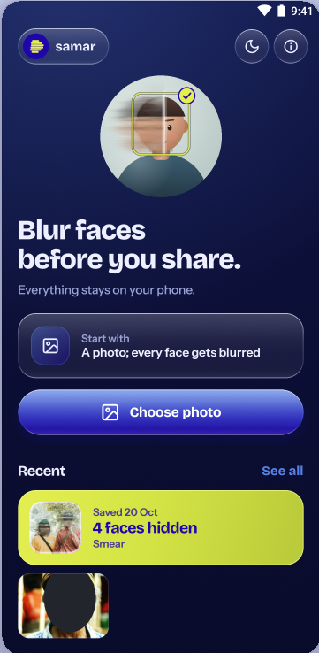
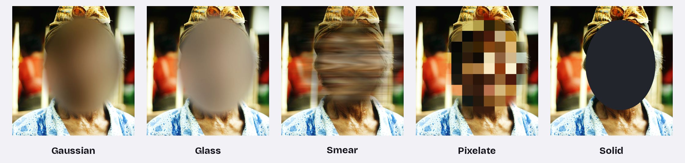

Blur faces before you share.
Everything stays on your phone. samar finds the faces in a photo, hides them and saves a clean copy. No accounts, no uploads, no tracking.
samar (Indonesian): faint, indistinct, hard to make out.



Share the moment, not everyone’s face.
You took a photo with friends, strangers or kids in it. samar hides the faces without the photo ever leaving your phone.
Fully on-device
Faces are found with Google’s ML Kit model, bundled inside the app. Photos are never uploaded.
Clean copies
Saved photos have location and camera info (EXIF, GPS) removed by default.
You stay in control
Auto blurs every face it finds; Manual lets you pick. Resize any blur, keep faces visible, or draw over one the detector missed.
Pick how it hides.
Gaussian, Glass, Smear, Pixelate and Solid, with one intensity slider. Every effect except Solid fades softly into hair and skin, so it looks natural rather than cut out.

Smear is a stylistic effect. Solid or Pixelate hide identity more reliably.
Three taps from photo to safe to post.
Choose a photo
samar opens it in the editor and finds every face right on your phone.
Check and pick a look
Tap a face to keep it visible. Choose an effect, drag the slider, compare with the original.
Save or share
Check Before and After, zoom in on small faces, then save to your gallery or share.
Nothing leaves your phone.
What samar doesn’t do
- No accounts, no analytics, no ads.
- No photo uploads, ever.
- ML Kit’s logging route is removed, so it has nowhere to send anything.
The one connection
- Once a day samar asks GitHub’s public API for the latest release. It contains nothing about you or your photos.
- Updates are verified (same app, newer, same signing key) before Android’s installer opens.
- You can turn the check off in About samar.
Get samar.
samar isn’t on Google Play yet. Install it straight from GitHub:
- On your Android phone, open the latest release and download the .apk.
- Open the file. If Android asks, allow your browser or Files app to install unknown apps.
- Tap Install. If Play Protect doesn’t recognise it, choose Install anyway.
Needs Android 8.0 (Oreo) or newer. Each release lists the APK’s SHA-256 so you can verify the download.
Kotlin + Jetpack Compose.
Apache 2.0 licensed.